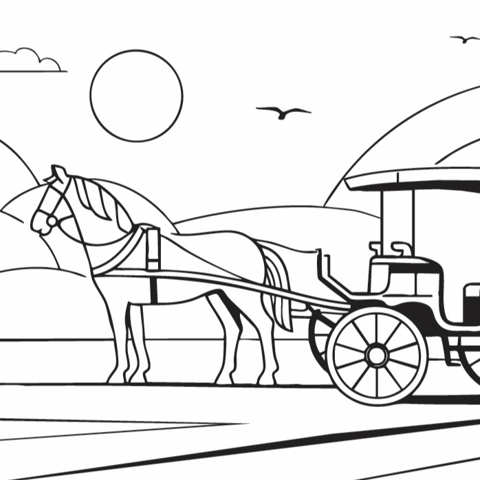
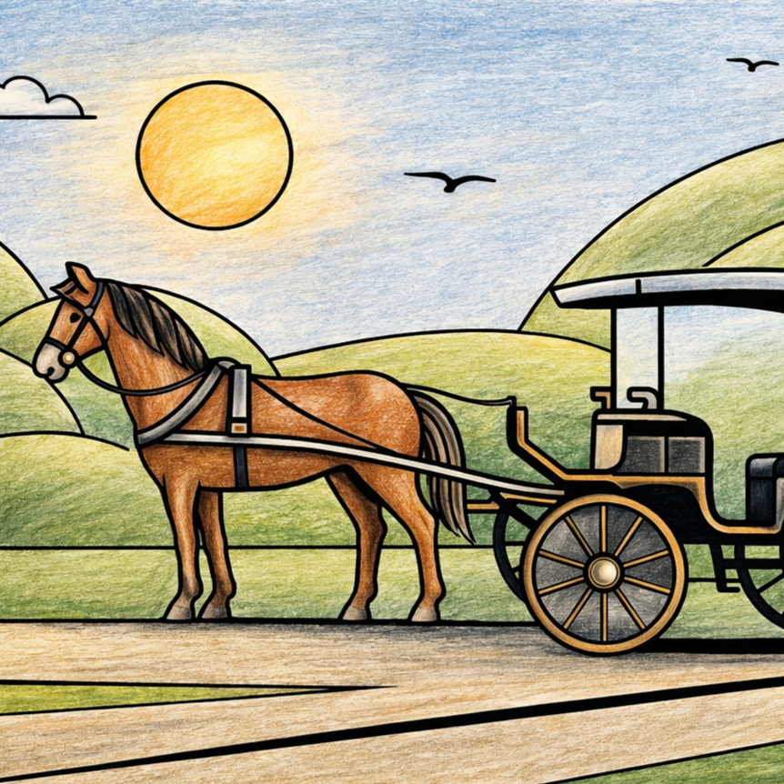

Belfry of Bruges
Begun in the 13th century, the Belfry of Bruges is famous for its medieval tower, carillon, and sweeping views over the old city.
Discover the architecture, neighbourhoods and everyday icons of Bruges through clean Bauhaus-inspired line illustrations, ready for your colours.
From Belfry of Bruges to Ffrietmuseum, this edition explores the sights, local culture and visual character of Bruges through a gallery of line illustrations.
Designed for adults who love travel, architecture and creative downtime, the pages use bold composition and open spaces for mindful colouring.
VIEW THE BRUGES BOOK

PREVIEW: BRUGES · LINE ART & COLOUR
Discover the places and details that inspired the illustrations in this edition.
Begun in the 13th century, the Belfry of Bruges is famous for its medieval tower, carillon, and sweeping views over the old city.
The main market square dates back to medieval Bruges, and it is famous for its lively atmosphere, historic façades, and central role in city life.
Developed in the Middle Ages, Burg Square is famous for its elegant historic buildings and for being one of Bruges’ most important civic spaces. Bruges City Hall, on Burg Square, was built from the 14th century onward and is famous for its ornate Gothic façade and richly decorated interior.
This canal-side spot became famous for its postcard-perfect reflections, medieval architecture, and romantic view of Bruges.
Built in the early 20th century, Bonifacius Bridge is famous for its quiet, picturesque setting beside the canals and old stone buildings.
Founded in 1245, the Bruges Beguinage is famous for its whitewashed houses, tranquil courtyard, and UNESCO heritage status.
Dating back to Bruges’ historic milling tradition, the city’s windmills are famous for their scenic hilltop views and link to the past.
Long associated with Bruges’ romantic legends, Minnewater is famous for its peaceful lake, graceful swans, and charming park setting.
Modern canal tours became a popular way to see Bruges in the 20th century, and they are famous for revealing the city from its waterways.
Opened in 1930, the Groeningemuseum is famous for its outstanding collection of Flemish and Belgian art.
A traditional tourist experience, the horse carriage is famous for giving visitors a slow, scenic way to explore Bruges’ medieval streets.
Rooted in Belgium’s long chocolate-making tradition, the chocolate box is famous as a delicious symbol of Belgian craftsmanship.
One of Bruges’ atmospheric old streets, Blinde Ezelstraat is famous for its narrow passage, historic buildings, and link between key city squares.
Built across centuries along the waterways, Bruges’ canal houses are famous for their stepped façades, reflections, and storybook setting.
Bruges lace became renowned from the 16th century onward, and it is famous for its fine craftsmanship and delicate handmade tradition.
Begun in the 13th century, the Church of Our Lady is famous for its tall brick tower and Michelangelo’s Madonna and Child sculpture.
The world’s only museum entirely dedicated to the history of potato fries, charting the history of the potato and the secrets behind making authentic Belgian fries.
Explore the Bruges edition and the wider Page Craft Studio city colouring book collection.